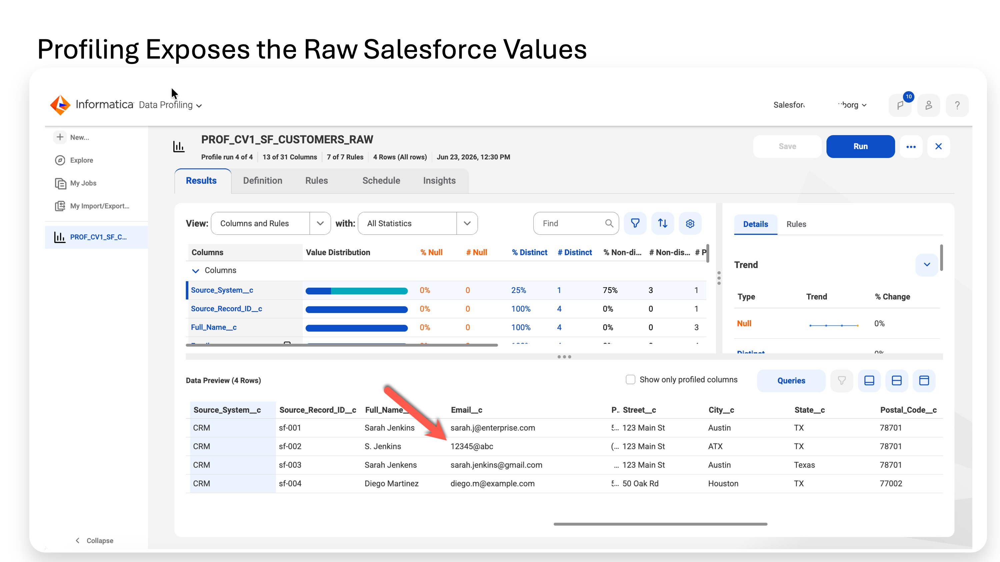
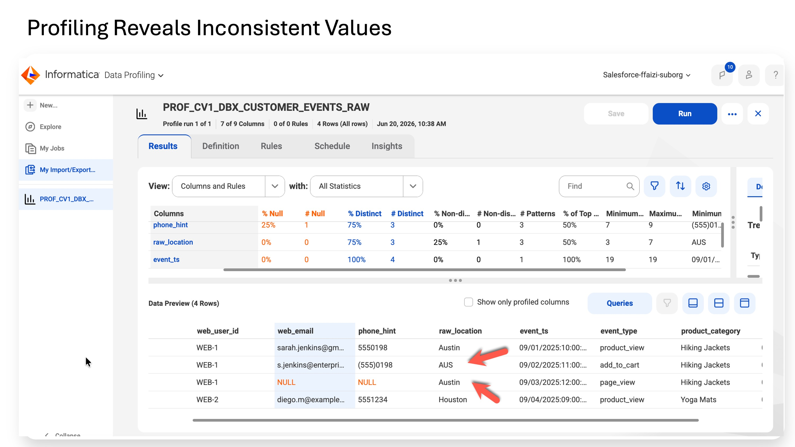
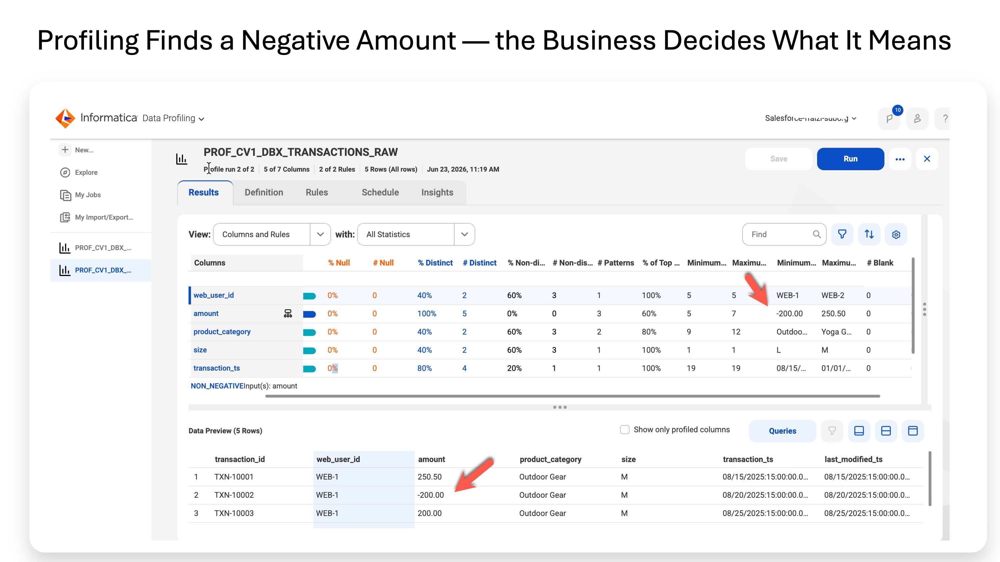

Lab 2
Inspect the raw source data and establish a before-baseline. Profiling reads the data and calculates statistics; it does not decide whether a value is valid and it does not modify the source.
Raw source data
|
v
Profiling
nulls / distinct values / frequencies / patterns / min / max
|
v
Human interpretation
what looks suspicious?
No source data is changed
| Source | Object | What you learn |
|---|---|---|
| Salesforce | CV1_Customer__c | Customer identity fields: email, phone, city/state/country, dates, names, consent. |
| Databricks | v_customer_events | Behavioral identity hints: email, phone hint, location, event data. |
| Databricks | v_transactions | Transaction amount and date ranges. |
A first profile answers a different question from a quality rule. It tells you what values and statistical patterns actually exist before you encode business expectations.
• Confirm the runtime and connections can read the source data.
• Capture the before-state so later scorecards have a baseline.
• See which issues deserve explicit business rules or standardization.
For example, a profile can show 12345@abc as one of the distinct email values and show 2028 as the maximum purchase date. The profiler does not label either one invalid; that judgment becomes a Rule Specification in Lab 4A.
This lab uses the standalone Data Profiling route because it is the simplest way to learn profiling directly against a connection and source object.
Profiling also exists in the Data Governance and Catalog context after technical assets have been discovered through Metadata Command Center. The profiling purpose is the same; the surrounding catalog context is different.
• Salesforce sample data is loaded with Email__c and Phone__c as plain Text fields so the intended bad values survived.
• Databricks sample data is available.
• A Secure Agent runtime is Up and Running with the required Data Quality capability.
• Connections CN_SF_CV1 and CN_DBX_CV1 test successfully and use the Secure Agent runtime.
• If the workshop governance scaffolding from Lab 1 exists, leave it unchanged; it is not used by the profiling clicks here.
• Null count and percentage.
• Distinct-value count and value frequencies.
• Non-distinct count and percentage.
• Minimum and maximum for numeric/date columns.
• Pattern analysis and string-length information.
• Inferred semantic type when CLAIRE is enabled.
• Data Preview of actual rows.
You do not write custom rules to obtain these statistics.
| Possible entry point | Use in this lab |
|---|---|
| Service selector → Data Profiling | Preferred standalone profile-task UI. |
| Service selector → Data Quality → Profile tasks | Alternate route if your tenant exposes profiling there. |
| Data Governance and Catalog | Not used for the hands-on profile task in this lab. |
1. Create a new profile task.
2. Name = PROF_CV1_SF_CUSTOMERS_RAW.
3. Source connection = CN_SF_CV1.
4. Source object = CV1_Customer__c.
5. Project = CV1_DATA_AI_WORKSHOP if prompted.
Keep these 13 fields and uncheck Salesforce system/audit fields and the three empty MDM_* placeholders:
• Source_System__c
• Source_Record_ID__c
• Full_Name__c
• Email__c
• Phone__c
• Street__c
• City__c
• State__c
• Postal_Code__c
• Country__c
• Last_Purchase_Date__c
• Loyalty_Tier__c
• Consent_Status__c
6. Administrator → Connections → CN_SF_CV1 → verify Runtime Environment and Test Connection.
7. Repeat for CN_DBX_CV1.
8. Open PROF_CV1_SF_CUSTOMERS_RAW → Schedule.
9. Runtime Environment = the same Secure Agent.
10. Save.
11. Click Run.
12. Wait for completion.
13. Open Results.
| Column | Profiler reports | What you should notice |
|---|---|---|
| Email__c | 4 distinct values including 12345@abc | One value does not have a normal email structure. Later: email validity rule. |
| Phone__c | 25% null; several formatting patterns | One value is missing and the others use inconsistent formatting. Later: completeness + standardization. |
| City__c | ATX, Austin, Houston | ATX is a non-standard city alias. Later: standardize. |
| State__c | TX, Texas | Two representations for the same state. Later: standardize. |
| Country__c | US, USA | Two representations for the same country. Later: standardize. |
| Last_Purchase_Date__c | Maximum in 2028 | Future date requires an explicit business rule. |
| Postal_Code__c | No obvious workshop defect | No action required from this sample. |
| Full_Name__c | Several Sarah name variants plus Diego | Profiling shows the variation; MDM later determines which records belong to the same customer. |
14. Create a new profile task.
15. Name = PROF_CV1_DBX_CUSTOMER_EVENTS_RAW.
16. Source = CN_DBX_CV1.
17. Object = cv1_workshop_catalog.cv1_workshop.v_customer_events.
18. Leave Project at its default location if that is how the tenant presents the Databricks profile task.
Profile these fields:
• web_user_id
• web_email
• phone_hint
• raw_location
• event_ts
• event_type
• product_category
19. Schedule → Runtime Environment = Secure Agent → Save → Run.
| Column | Profiler reports | What you should notice |
|---|---|---|
| web_email | One or more nulls; Sarah Gmail + enterprise email + Diego email | Sarah appears under more than one email across events; one event has no email. |
| phone_hint | Null plus 5550198, (555)0198, 5551234 | Same real-world phone concept uses different formatting. |
| raw_location | AUS, Austin, Houston | AUS is a location alias that should be standardized. |
| web_user_id | WEB-1 and WEB-2 | Useful source-system identifier linking events and transactions. |
20. Create a new profile task.
21. Name = PROF_CV1_DBX_TRANSACTIONS_RAW.
22. Source = CN_DBX_CV1.
23. Object = cv1_workshop_catalog.cv1_workshop.v_transactions.
Profile these fields:
• web_user_id
• amount
• product_category
• size
• transaction_ts
24. Schedule → Runtime Environment = Secure Agent → Save → Run.
| Column | Profiler reports | What you should notice |
|---|---|---|
| amount | Minimum = -200.00; maximum = 250.50 | A negative transaction needs an agreed business rule. |
| transaction_ts | Maximum in 2028 | Future transaction date needs an agreed rule. |
| web_user_id | WEB-1 and WEB-2 | Same identifier pattern used in customer_events. |
• If the connection cannot start the warehouse, open Databricks and start the SQL Warehouse, then retry.
• Use the views in the tested environment. If the tenant behaves differently, preserve the same fields and profiling purpose.
• Three profile tasks completed successfully.
• Salesforce profile shows the intentionally malformed/inconsistent values and the phone null.
• customer_events profile shows AUS, email/phone nulls, and phone-format variation.
• transactions profile shows -200.00 and a future transaction timestamp.
• No source data was changed.
• Databricks profiles ran against the tested views.
• Keep the profile results available for the rule-design and scorecard labs.

The data preview makes the issue visible: one Salesforce record contains 12345@abc, alongside apparently normal email values and other variations such as ATX and Texas. Profiling reports what is present; it does not yet decide which values violate a business rule.

Databricks contains three distinct raw_location values across four rows: Austin, AUS and Houston. Informatica reports the values, nulls, distinct counts and structural patterns, but it does not know that AUS and Austin should represent the same city. That decision belongs to the business in Lab 3.

The amount column has a minimum value of -200.00, so profiling tells us that negative transactions exist. It does not decide whether that value is wrong: the business must determine whether negatives represent legitimate activity such as refunds or should fail a quality rule.
We now have a factual picture of the raw data. We know which fields contain nulls, which values vary, and which numeric/date ranges look suspicious. We have not yet encoded any business judgment.
Lab 2: observe the data
|
v
Lab 3: agree what 'good' means
|
v
Lab 4A: turn those standards into measured pass/fail rules
Lab 3 converts these observations into agreed data-quality and standardization requirements. It is a planning lab: no data is changed and no rule executes yet.
Trusted Data Foundation Workshop